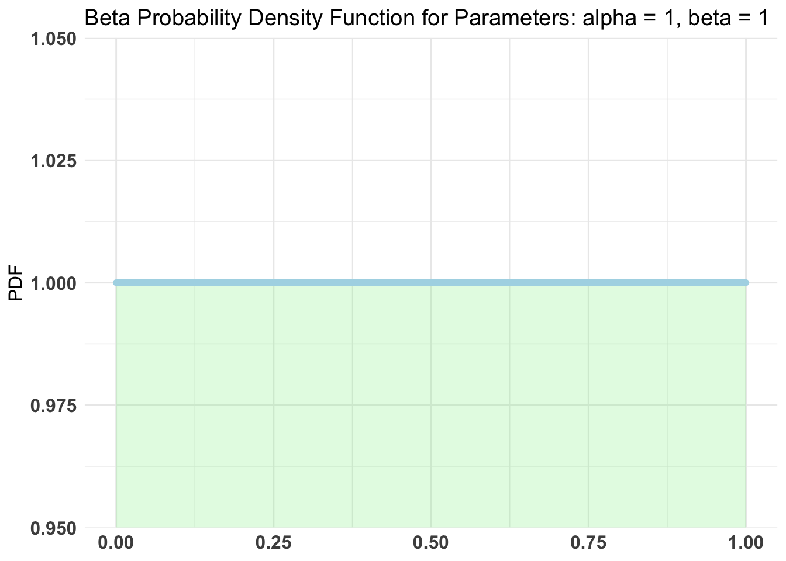
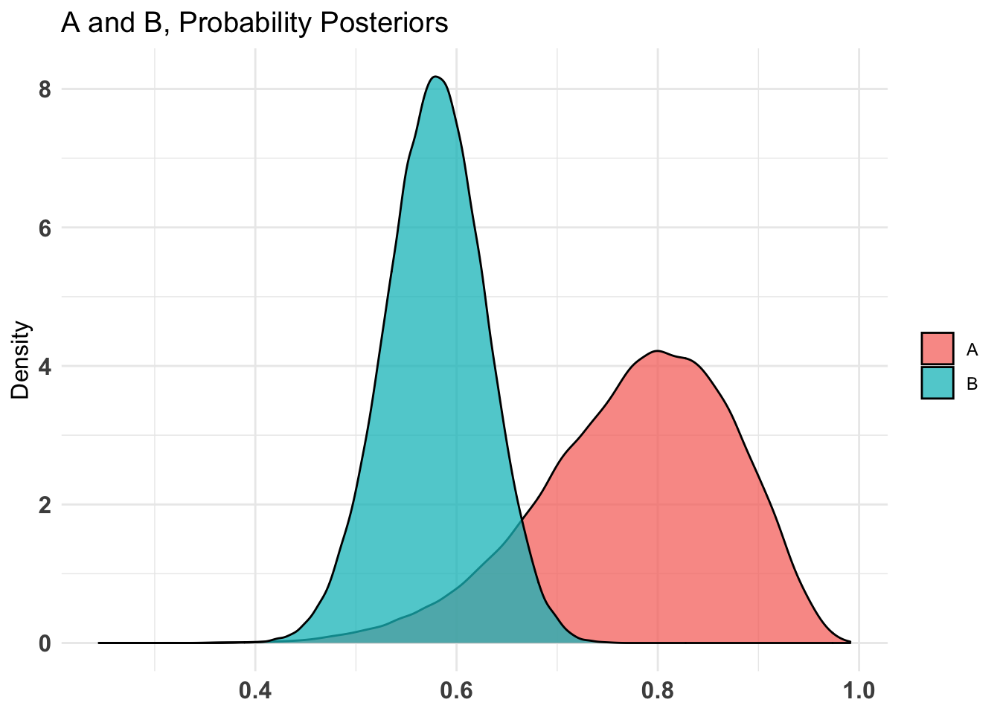
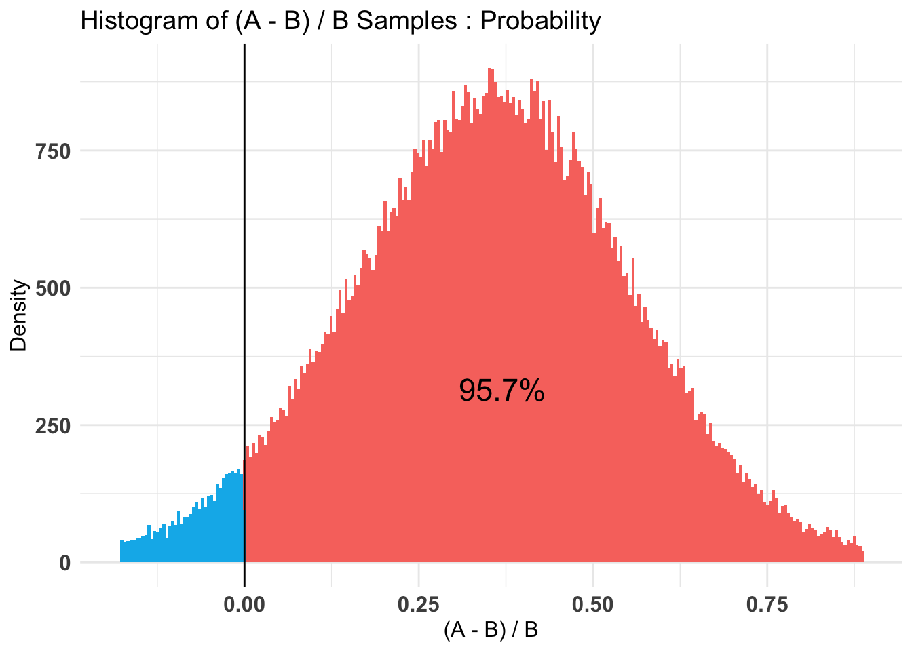
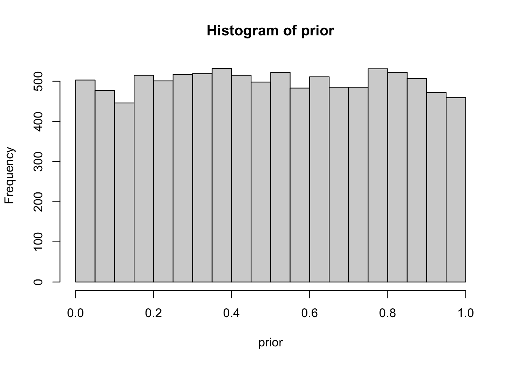
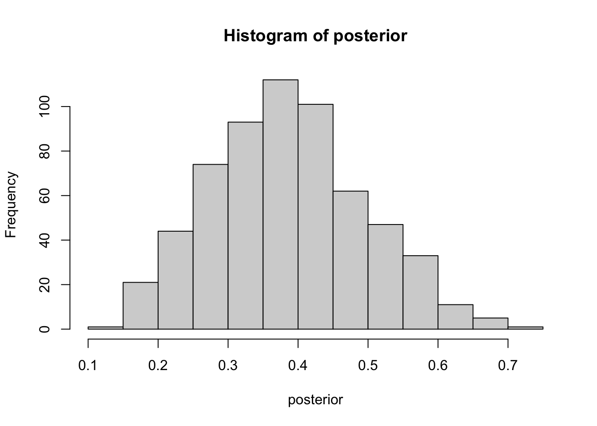
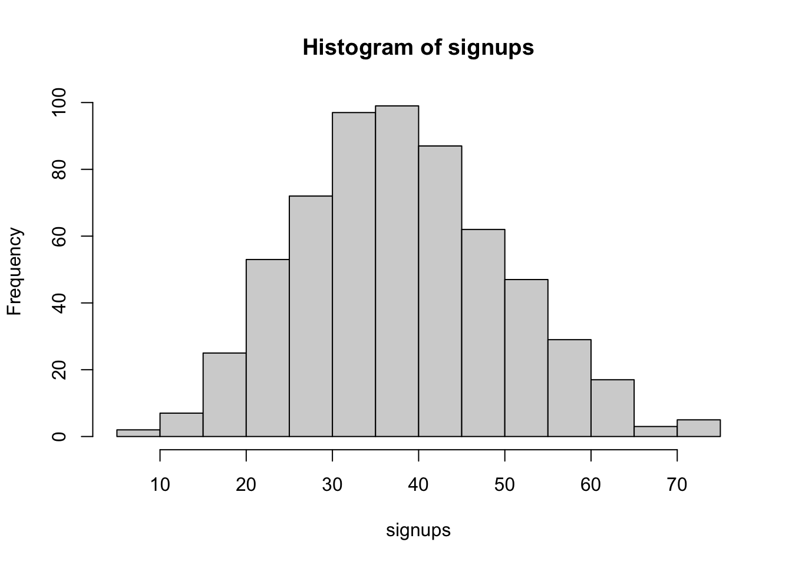

# Loading packages
library(tidyverse)
library(bayesAB)Bayesian A/B testing in R
R
Casual interference
Bayesian interference
Using A/B testing in R with the bayesAB package
Introduction to bayesian A/B testing
Part 1
Watch this amazing series if you need an introduction to baysian.
Part 2
Part 3
Loading packages
Install bayesAB if you do not have it.
Loading data
# Loading data
set.seed(20220513)
A=rbinom(n=16,size=1,prob=0.8)
table(A)A
0 1
3 13 B=rbinom(n=100,size=1,prob=0.6)
table(B)B
0 1
42 58 Checking the maximum likelihood
mean(A)[1] 0.8125mean(B)[1] 0.58We have no idea what lies in the data
Using a uninformative prior.

Setup for the test
Using Bernoulli distribution with 100k samples.
AB1 <- bayesTest(A, B, priors = c('alpha' = 1, 'beta' = 1),
n_samples = 1e5, distribution = 'bernoulli')
print(AB1)--------------------------------------------
Distribution used: bernoulli
--------------------------------------------
Using data with the following properties:
A B
Min. 0.0000 0.00
1st Qu. 1.0000 0.00
Median 1.0000 1.00
Mean 0.8125 0.58
3rd Qu. 1.0000 1.00
Max. 1.0000 1.00
--------------------------------------------
Conjugate Prior Distribution: Beta
Conjugate Prior Parameters:
$alpha
[1] 1
$beta
[1] 1
--------------------------------------------
Calculated posteriors for the following parameters:
Probability
--------------------------------------------
Monte Carlo samples generated per posterior:
[1] 1e+05Checking out the results from the summary
summary(AB1)Quantiles of posteriors for A and B:
$Probability
$Probability$A
0% 25% 50% 75% 100%
0.2445932 0.7171955 0.7879369 0.8483182 0.9912624
$Probability$B
0% 25% 50% 75% 100%
0.3743089 0.5462008 0.5793034 0.6119321 0.7599387
--------------------------------------------
P(A > B) by (0)%:
$Probability
[1] 0.95664
--------------------------------------------
Credible Interval on (A - B) / B for interval length(s) (0.9) :
$Probability
5% 95%
0.01391909 0.68653184
--------------------------------------------
Posterior Expected Loss for choosing A over B:
$Probability
[1] 0.004511233Plotting the results
plot(AB1)[[2]]$Probability
$Probability
Posterior Expected Loss for choosing A over B: 4.5 percent.
Rasmus Bååth example - Using one distribution
I run through the examples from Rasmus Bååth. Check it out.
We will send 16 mails to people and 6 signed up, how good is this method? We are searching for the probability that a random person who receives the offer will signup. We know that is possible to extract the maximum likelihood.
\[\frac{Signed\ up}{Recieved\ Offer}=\frac{6}{16}=0.375=37.5\ percent\]
16 however is a small sample of people, how certain can we be that it is giving us any value. We can use bayesian methods to extract the possible ways to reach 16 people.
What would the rate of sign-up be if method A was used on a larger number of people?
# Number of random draws from the prior
n_draws <- 10000
prior <- runif(n_draws,0,1) # Here you sample n_draws draws from the prior
hist(prior) # It's always good to eyeball the prior to make sure it looks ok.
# Here you define the generative model
generative_model <- function(rate) {
subs=rbinom(1,size=16,prob=rate)
subs
}
# Here you simulate data using the parameters from the prior and the
# generative model
subs <- rep(NA, n_draws)
for(i in 1:n_draws) {
subs[i] <- generative_model(prior[i])
}
# Here you filter off all draws that do not match the data.
posterior <- prior[subs == 6]
hist(posterior) # Eyeball the posterior
length(posterior) # See that we got enought draws left after the filtering.[1] 605 # There are no rules here, but you probably want to aim
# for >1000 draws.
# Now you can summarize the posterior, where a common summary is to take the mean
# or the median posterior, and perhaps a 95% quantile interval.
median(posterior)[1] 0.3837504quantile(posterior, c(0.025, 0.975)) 2.5% 97.5%
0.1805234 0.6013402 sum(posterior > 0.2) / length(posterior)[1] 0.9636364
2.5% 97.5%
17 63 If we send the mail to 100 people it is likely we will see it being between 16 and 61 people.
End
Thanks for reading this post, this has been a post on A/B testing in R using Bayesian methods. It is a superb way for data scientist to discover what version is the best. Ciao!